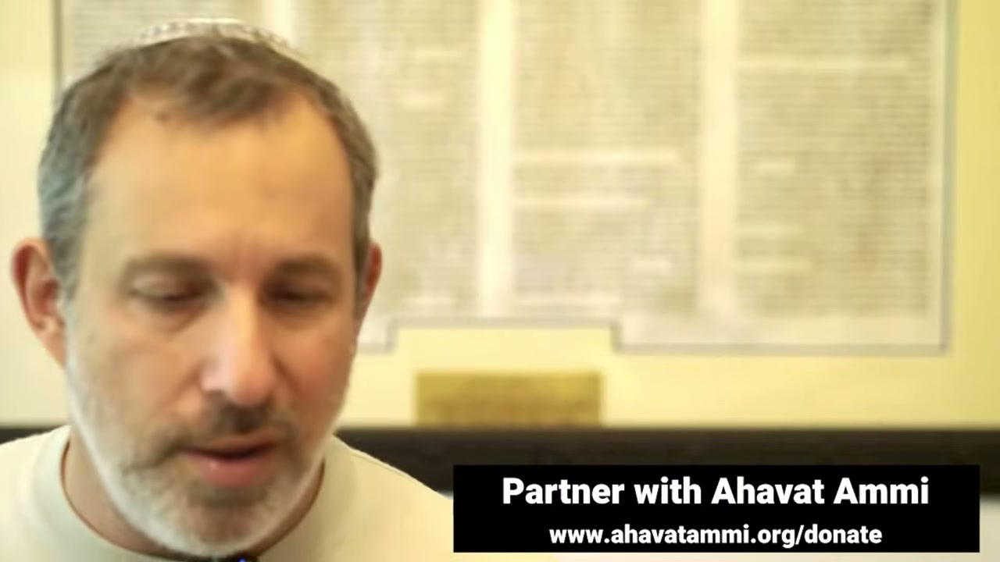

妥拉崇拜 ── 拿索篇、使徒行傳 21 章與祭司的祝福 The Torah Service — Naso, Acts 21, and the Priestly Blessing
這是整場環球安息日晨禱的高峰：妥拉之上的祝福、拿索篇（民數記四與祭司的篇章）的誦讀、士師記的哈夫塔拉、以及保羅在聖殿守拿細耳人之願的使徒行傳 21 章。整場崇拜攀升至 בִּרְכַּת כֹּהֲנִים 祭司的祝福（民數記 6:24–26）——拿索篇真正的心臟。 The climax of an entire worldwide Shabbat-morning service: the blessing over the Torah, the reading of Parashat Naso (Numbers 4 and the priestly portion), the Haftarah from Judges, and the Acts 21 reading where Paul keeps a Nazirite vow in the Temple. The service rises to בִּרְכַּת כֹּהֲנִים, the Priestly Blessing (Numbers 6:24–26) — the literal heart of Naso.
經過數小時的環球安息日晨禱——詩篇、示瑪、阿米達、列國的禱告——整場崇拜如今攀升至它的頂點：妥拉崇拜。約櫃打開，誦讀者唱出妥拉之上的祝福，本週的篇章 נָשֹׂא（Naso，「抬起、數點」）被高高舉起。這是民數記中最長的一個篇章，而它真正的心臟，是民數記第六章那短短三節的 בִּרְכַּת כֹּהֲנִים（Birkat Kohanim，「祭司的祝福」）。在它之前，我們先聽士師記的哈夫塔拉，再聽使徒行傳 21 章——保羅在耶路撒冷的聖殿裡守一個 נָזִיר（nazir，拿細耳人）的 נֶדֶר（neder，誓願）。整場崇拜，就在那雙高舉、五指張開的祭司之手下，落入最後的安息。 After hours of a worldwide Shabbat-morning service — the Psalms, the Shema, the Amidah, the prayer for the nations — the whole liturgy now rises to its summit: the Torah Service. The ark is opened, the reader chants the blessing over the Torah, and this week's portion — נָשֹׂא (Naso, “lift up, take a census”) — is held aloft. It is the longest single parashah in the Torah, and its literal heart is the three short verses of בִּרְכַּת כֹּהֲנִים (Birkat Kohanim, “the Priestly Blessing”) in Numbers 6. Before it we hear the Haftarah from Judges, and then Acts 21 — where Paul, in the Temple at Jerusalem, keeps a נָזִיר (nazir, Nazirite) נֶדֶר (neder, vow). The entire service comes to rest under those raised hands, fingers spread, of the priest.
一、約櫃打開 ── 妥拉之上的祝福I. The Ark Is Opened — The Blessing Over the Torah
這是一場環球安息日晨禱的最後一段——也是它的頂點。在這之前，世界各地的會眾已經一同走過了好幾個小時的禱告：清晨的讚美詩篇、示瑪（「以色列啊，你要聽」）、十八祝文 阿米達、為列國與耶路撒冷的代求。如今，一切的禱告都向著一個焦點匯聚——神的話本身要被打開、被誦讀、被高舉。這就是 妥拉崇拜。 This is the final movement of a worldwide Shabbat-morning service — and its summit. Before it, congregations across the earth have walked together through hours of prayer: the morning Psalms of praise, the Shema (“Hear, O Israel”), the eighteen-fold Amidah, the intercessions for the nations and for Jerusalem. Now every prayer converges on one focus — the word of God itself, to be opened, read, and lifted high. This is the Torah Service.
在每一場安息日晨禱裡，妥拉崇拜都是整個聚會的高峰。前面的一切——讚美詩、示瑪、阿米達——都是在預備我們的心，好讓神的話被高舉、被誦讀。誦讀者不會直接讀經文，而是先唱出一段祝福：「祂在萬民中揀選了我們，將祂的妥拉賜給我們」。在希伯來的崇拜邏輯裡，你不能在沒有先稱頌賜話之神的情況下接觸神的話。 In every Shabbat-morning service the Torah Service is the high point of the entire gathering. Everything before it — the songs of praise, the Shema, the Amidah — has been preparing the heart for the moment God's word is lifted up and read. The reader does not simply read the text; first he chants a blessing: “who chose us from among all peoples and gave us His Torah.” In the logic of Hebrew worship, you do not touch the word of God without first blessing the God who gives the word.
這個次序本身就是教導：妥拉不是一份待研究的文獻，而是一位活神的聲音。當約櫃打開、卷軸被抬起時，會眾起立——因為被高舉的，是西奈山所傳下、由亞倫和他眾子（Kohanim，祭司）一代代傳給以色列的同一個話語。本週這話語的名字是 נָשֹׂא。 The very order is itself a teaching: the Torah is not a document to be studied but the living voice of a living God. When the ark is opened and the scroll lifted, the congregation rises — for what is being raised is the same word handed down from Sinai, passed from Aaron and his sons (the Kohanim, the priests) to Israel, generation after generation. This week that word has a name: נָשֹׂא.
二、拿索篇 ── 「抬起頭來」（民數記 4 與 6）II. Parashat Naso — “Lift Up the Head” (Numbers 4 and 6)
本週的篇章是 נָשֹׂא（Naso）。這個動詞的字面意思是「抬起」——經文起頭是「你要抬起利未支派中革順子孫的頭」（民數記 4:22），也就是「數點」他們。但「抬起頭來」這個說法本身就帶著尊嚴：神不只是在清點人數，祂是在把每一個人從匿名中抬起、賦予名字與職任。民數記第四章記載利未人在會幕裡各自的服事崗位——誰抬什麼、誰看守什麼——這是聖潔的秩序，是祭司事奉的根基。 This week's portion is נָשֹׂא (Naso). The verb literally means “to lift up” — the portion opens, “Lift up the head of the sons of Gershon also” (Numbers 4:22), that is, “take a census” of them. But the idiom “lift up the head” itself carries dignity: God is not merely counting bodies; He is lifting each person out of anonymity and assigning a name and a charge. Numbers 4 records the Levites' service-posts in the Tabernacle — who carries what, who guards what — the holy order that is the foundation of priestly ministry.
民數記第四章把利未三大家族——革順、哥轄、米拉利——各自在會幕中的職任一一列出：哥轄人抬至聖的器具，革順人負責帷幔與罩棚，米拉利人扛抬板、閂、柱、座。這份細緻的清單看似枯燥，卻是聖潔秩序的根基：在神的家中，每一個人都有名字、有崗位、有當盡的本分。祭司事奉的尊嚴，正是從這份「人人各按其分」的次序裡長出來的。 Numbers 4 lays out the duties of the three great Levite clans — Gershon, Kohath, Merari — each in the Tabernacle: the Kohathites carry the most holy vessels, the Gershonites tend the curtains and coverings, the Merarites bear the boards, bars, pillars, and sockets. This meticulous list may look dry, but it is the foundation of holy order: in God's house, every person has a name, a post, and a charge to keep. The dignity of priestly ministry grows out of this “each in his place” order.
這個篇章很長——它是妥拉中最長的單一篇章——涵蓋了多個主題：被打發出營的不潔之人、犯罪者的賠償、疑妒之祭、以及 נָזִיר（nazir，拿細耳人）的律法。拿細耳人是一個自願向神獻上自己、立 נֶדֶר（neder，誓願）的人：他不剃頭、不喝酒、不沾死屍。這在後面會極其重要——因為在使徒行傳 21 章，保羅自己守了一個拿細耳人的願。 The portion is long — the longest single parashah in the Torah — covering many themes: those sent outside the camp for impurity, restitution for the wronged, the ordeal of the suspected wife, and the law of the נָזִיר (nazir, the Nazirite). The Nazirite is one who voluntarily consecrates himself to God by a נֶדֶר (neder, vow): he does not cut his hair, drink wine, or touch a corpse. This will matter enormously later — because in Acts 21, Paul himself keeps a Nazirite vow.
但這篇所有的支流，都流向第六章末尾那短短的三節——祭司的祝福。米大示說，神之所以在拿索篇裡把這麼多看似零散的律法擺在一起，是要把它們全都「抬起」到那最後一個高音：神親自吩咐祭司，要如何把祂的名加在祂百姓身上。 But all the tributaries of this portion flow toward three short verses at the end of chapter 6 — the Priestly Blessing. The Midrash says God gathered all these seemingly scattered laws into Naso in order to “lift” them up to that one final high note: God Himself instructing the priests how to place His Name upon His people.
值得一提的是這個結構的優雅之處：篇章以「抬起頭來」（數點、賦予尊嚴）開始，以「願耶和華向你仰臉」（祭司祝福的最高潮）作結。從神「抬起」每一個人的頭，到神「轉過臉」朝向每一個人——拿索篇從頭到尾，講的都是神如何注視、抬舉、並祝福祂所數點的每一個人。沒有一個人在神面前是匿名的；每一個被數點的，都要被仰臉、被賜平安。 It is worth noting the elegance of the structure: the portion opens with “lift up the head” (the census, the conferring of dignity) and ends with “may the LORD lift up His face toward you” (the climax of the Priestly Blessing). From God “lifting” each person's head, to God “turning His face” toward each one — Naso from start to finish is about how God regards, lifts, and blesses every person He counts. No one stands anonymous before God; everyone counted is to be looked upon and given peace.
拿細耳人的願尤其值得停留。一個拿細耳人，可能是出身平凡的以色列人，甚至是寄居的——他不是祭司，卻藉著自願的 neder，把自己分別為聖歸給神，活出一種類似祭司的聖潔。這是妥拉裡一條「人人皆可親近聖潔」的通道：你不必生在亞倫家，也能立志過分別為聖、歸神為聖的生活。這條通道，正預備了使徒行傳 21 章的保羅，也預備了今日每一位渴慕聖潔的列國信徒。 The Nazirite vow especially deserves a pause. A Nazirite might be an ordinary Israelite, even a sojourner — not a priest, yet by a voluntary neder he sets himself apart to God and lives a priest-like holiness. This is a Torah pathway of “holiness open to all”: you need not be born into Aaron's house to resolve to live a consecrated, set-apart life unto God. That pathway prepares the way for Paul in Acts 21 — and for every believer from the nations today who longs for holiness.
三、哈夫塔拉 ── 參孫，拿細耳人的孩子（士師記 13）III. The Haftarah — Samson, the Nazirite Child (Judges 13)
妥拉誦讀之後，緊接著是 הַפְטָרָה（Haftarah）——從眾先知書中選出、與當週妥拉篇章呼應的一段。拿索篇配搭的哈夫塔拉是士師記第十三章：天使向瑪挪亞和他不能生育的妻子顯現，預告參孫的誕生——一個從母腹就歸神為拿細耳人的孩子。 After the Torah reading comes the הַפְטָרָה (Haftarah) — a passage chosen from the Prophets to echo the week's Torah portion. The Haftarah paired with Naso is Judges 13: the angel appearing to Manoah and his barren wife, announcing the birth of Samson — a child set apart to God as a Nazirite from the womb.
這個配搭顯然是因為拿細耳人的主題：拿索篇給了拿細耳人的律法，士師記則給了一個活生生的拿細耳人的故事。崇拜中所誦讀的結尾（士師記 13:21–25）記載瑪挪亞驚呼「我們必死，因為見了神」，以及孩子的出生與成長：「孩子漸漸長大，耶和華賜福與他。」——神的祝福，臨到一個被分別出來歸神的人身上。這正是拿索篇的核心脈動，也預先指向那即將高聲宣告的祝福。 The pairing is clearly the Nazirite theme: Naso gives the law of the Nazirite, Judges gives a living Nazirite story. The closing verses read in the service (Judges 13:21–25) record Manoah's cry, “We shall surely die, for we have seen God,” then the child's birth and growth: “the boy grew, and the LORD blessed him.” The blessing of God resting on one set apart for God — the very pulse of Naso, and a foreshadow of the blessing about to be proclaimed aloud.
這裡藏著一個與祭司祝福呼應的細節。瑪挪亞驚呼「我們必死，因為見了神」——人見了神的「臉」，按常理是不能存活的。然而祭司的祝福卻大膽地求告：「願耶和華向你仰臉」。在參孫的故事裡，見神的臉令人懼怕；在祭司的祝福裡，神向你仰臉卻成了至深的恩典與平安。這正是整場崇拜要帶我們去的地方：從「誰能見神的面存活呢？」到「願祂向你仰臉，賜你平安。」 A detail here rhymes with the Priestly Blessing. Manoah cries, “We shall surely die, for we have seen God” — to see God's “face” should, by all reckoning, cost a person his life. Yet the Priestly Blessing dares to ask: “may the LORD lift up His face toward you.” In Samson's story, seeing God's face is terrifying; in the priest's blessing, God's face turned toward you becomes the deepest grace and peace. This is exactly where the whole service is taking us: from “who can see God's face and live?” to “may He lift up His face toward you and give you peace.”
四、彌賽亞的誦讀 ── 保羅守拿細耳人之願（使徒行傳 21）IV. The Messianic Reading — Paul Keeps a Nazirite Vow (Acts 21)
在這場彌賽亞信徒的崇拜裡，哈夫塔拉之後還加上一段 בְּרִית חֲדָשָׁה（Brit Chadashah，新約）的誦讀——使徒行傳 21:17–26。這不是隨意挑選的：它正是拿索篇拿細耳人主題在新約裡的迴響。 In this Messianic service, the Haftarah is followed by a reading from the בְּרִית חֲדָשָׁה (Brit Chadashah, the New Covenant) — Acts 21:17–26. It is not chosen at random: it is the echo, in the New Testament, of Naso's Nazirite theme.
這段誦讀之前，崇拜先唱了 Brit Chadashah 的祝福——正如妥拉之上有祝福、先知書（哈夫塔拉）之上有祝福，新約的話語之上也有祝福。這個次序在彌賽亞信徒的崇拜裡意味深長：它把摩西、眾先知、與眾使徒擺在同一張桌上，作為同一位神、同一個約、同一個故事的見證。而這一週，使徒的見證恰恰落在拿細耳人身上——保羅。 Before this reading, the service chants the blessing over the Brit Chadashah — just as there is a blessing over the Torah and over the Prophets (the Haftarah), so there is a blessing over the words of the New Covenant. That order is significant in a Messianic service: it sets Moses, the Prophets, and the Apostles on one table as witnesses to one God, one covenant, one story. And this week the apostolic witness falls precisely on a Nazirite — on Paul.
保羅回到耶路撒冷。雅各和眾長老告訴他：信主的猶太人「有數萬，並且都為妥拉熱心」，而人們聽見謠言，說保羅教導猶太人「離棄摩西」。長老們給他的建議很具體：有四個人許了願（一個拿細耳人的願），你帶他們去，與他們一同行潔淨的禮，替他們拿出規費，叫他們得以剃頭——這樣眾人就知道，先前所聽見你的事都是虛的，而你自己是循規蹈矩、遵守妥拉的。 Paul returns to Jerusalem. James and the elders tell him that Jewish believers number “myriads, and they are all zealous for the Torah,” and that rumours are circulating that Paul teaches Jews to “forsake Moses.” Their counsel is concrete: there are four men under a vow (a Nazirite vow); take them, purify yourself with them, pay their expenses so they may shave their heads — so that all will know there is nothing to what they were told about you, but that you yourself walk in an orderly manner, keeping the Torah.
於是「次日保羅帶著那四個人，與他們一同行了潔淨的禮，進了聖殿。」這就是拿索篇的拿細耳人律法、在使徒行傳裡由保羅親手實踐的一幕。它有力地見證了一件事：使徒並沒有廢棄妥拉。保羅這位被差往外邦的使徒，仍然進聖殿、守誓願、出規費、循規蹈矩。同時，長老們重申了給外邦信徒的決定（徒 15）——禁戒祭偶像之物、血、勒死的牲畜、與淫亂——一個次序井然、各按其分的群體。 And so “the next day Paul took the men, purified himself with them, and went into the Temple.” This is Naso's Nazirite law enacted by Paul's own hands in Acts. It is a powerful witness to one thing: the apostles did not abolish the Torah. Paul, the apostle sent to the Gentiles, still enters the Temple, keeps a vow, pays the expenses, walks in order. At the same time the elders reaffirm the ruling for Gentile believers (Acts 15) — to abstain from food offered to idols, from blood, from what is strangled, and from immorality — one body, rightly ordered, each in his place.
在這場崇拜的次序裡，這段誦讀的位置意味深長：它緊接在士師記的拿細耳人故事之後，又緊接在 Aleinu（屬於我們的軛）之前。它告訴每一位列國中的信徒：歸入彌賽亞，不是把妥拉丟在身後，而是被接進一個次序井然、各按其分、彼此相愛的盟約群體。猶太信徒守他們的妥拉，外邦信徒守使徒所定的根基——一棵樹，一個約，一個身體。保羅在聖殿裡剃頭、出規費的那一幕，正是這個合一最具體、最動人的圖畫。 In the order of this service the reading's placement is telling: it falls right after the Nazirite story of Judges and right before Aleinu (the yoke that is ours). It says to every believer from the nations: to come into the Messiah is not to leave the Torah behind, but to be grafted into a covenant people that is rightly ordered, each in his place, loving one another. Jewish believers keep their Torah; Gentile believers keep the apostolic foundations — one tree, one covenant, one body. Paul shaving his head and paying the expenses in the Temple is the most concrete and moving picture of that unity.
五、屬於我們的軛 ── Aleinu（軛 / oleinu）V. The Yoke That Is Ours — Aleinu (the yoke, oleinu)
每一場猶太崇拜——無論是晨禱（Shacharit）、午禱（Mincha）還是晚禱（Ma'ariv）——都以 עָלֵינוּ（Aleinu）作結。拉比沙皮拉指出一個美麗的雙關：Aleinu 也可以讀作 עֹלֵנוּ（oleinu）——ol（עֹל）是「軛」，後綴 -einu 是「在我們身上」或「屬於我們的」。於是 oleinu 就是「屬於我們的那軛」。 Every Jewish service — whether morning (Shacharit), afternoon (Mincha), or evening (Ma'ariv) — closes with עָלֵינוּ (Aleinu). Rabbi Shapira points to a beautiful wordplay: Aleinu can also be vowelized as עֹלֵנוּ (oleinu) — ol (עֹל) is “yoke,” and the suffix -einu is “upon us” or “ours.” So oleinu is “the yoke that is ours.”
這直接回響耶書亞的話：「我的軛是容易的，我的擔子是輕省的」（馬太福音 11:30）。Aleinu 宣告神是全地的王、是創造者，並仰望那一日——「耶和華必作全地的王；那日耶和華必為獨一無二的」（撒迦利亞書 14:9）。盟約不是壓垮人的重擔，而是一個可以擔當的、屬於我們的軛——是被接進神家中的特權。整場崇拜以這個盼望收束，然後，把我們交給最後、也是最高的祝福。 This echoes Yeshua's words directly: “My yoke is easy and My burden is light” (Matthew 11:30). Aleinu declares God King over all the earth, the Creator, and looks toward the day — “the LORD will be King over all the earth; on that day the LORD will be one” (Zechariah 14:9). The covenant is not a crushing weight but a yoke that is bearable and ours — the privilege of being grafted into God's household. The service gathers up this hope and then hands us over to the last and highest blessing of all.
在哈夫塔拉之後、Aleinu 之前，崇拜還唱出一段對未來的祝福禱告：「大衛的國度，你的彌賽亞，必快快來臨，環繞我們；在祂的寶座上必沒有外人……」這把整場崇拜的盼望聚焦在彌賽亞君王的再來上。Aleinu 所說「屬於我們的軛」，正是這位君王溫柔的軛；我們今日所擔的，是預嘗那將要環繞全地的國度。崇拜就這樣，把過去（西奈）、現在（會眾）、與將來（彌賽亞的國）編織為一。 After the Haftarah and before Aleinu, the service also sings a prayer of blessing toward the future: “May the kingdom of David, Your Messiah, come swiftly and surround us; upon His throne let there be no stranger…” This focuses the hope of the whole service on the return of the Messianic King. The “yoke that is ours” of Aleinu is precisely the gentle yoke of this King; what we bear today is a foretaste of the kingdom that will one day encircle all the earth. So the service weaves past (Sinai), present (the congregation), and future (the Messiah's kingdom) into one.
這個雙關不是文字遊戲，而是神學。Aleinu（在我們身上）與 oleinu（屬於我們的軛）共用同一組希伯來字母——因為盟約的責任與盟約的特權，本就是同一件事的兩面。被神「加在我們身上」的，正是「屬於我們的」尊貴身分。耶書亞說祂的軛容易、擔子輕省，並非因為祂取消了妥拉，而是因為祂親自與我們同負這軛——「你們當負我的軛，學我的樣式」（馬太福音 11:29）。崇拜以這個宣告作結，把會眾的心轉向那將要環繞全地的國度。 This pun is not wordplay but theology. Aleinu (“upon us”) and oleinu (“the yoke that is ours”) share the same Hebrew letters — because the duty of the covenant and the privilege of the covenant are two sides of one thing. What God “lays upon us” is precisely the noble identity that “is ours.” Yeshua calls His yoke easy and His burden light not because He cancels the Torah, but because He bears the yoke with us — “take My yoke upon you, and learn from Me” (Matthew 11:29). The service closes with this declaration, turning the heart of the congregation toward the kingdom that will encircle all the earth.
六、崇拜的冠冕 ── 祭司的祝福（民數記 6:24–26）VI. The Crown of the Service — The Priestly Blessing (Numbers 6:24–26)
現在我們來到拿索篇的心臟，也是整場晨禱的冠冕：בִּרְכַּת כֹּהֲנִים（Birkat Kohanim，祭司的祝福）。這是神親口賜下的話，從亞倫和他眾子（Kohanim）一代一代傳給以色列。在會堂裡，祭司高舉雙手、五指張開，把這祝福放在會眾頭上；在教會裡，這也成了最古老、最被珍愛的差遣禱告之一。 Now we come to the heart of Naso and the crown of the whole morning service: בִּרְכַּת כֹּהֲנִים (Birkat Kohanim, the Priestly Blessing). These are words God spoke with His own mouth, handed from Aaron and his sons (the Kohanim) to Israel, generation after generation. In the synagogue the priests raise their hands, fingers spread, and place the blessing over the congregation; in the church it has become one of the oldest and most beloved of all benedictions.
拉比沙皮拉揭示了這祝福裡隱藏的結構。三節經文，逐節遞增：第一節 三個希伯來字，第二節 五個字，第三節 七個字（3、5、7）。再數字母：第一節 15 個字母，第二節 20 個，第三節 25 個——每一節都比上一節多 5 個字母。這個「逐節躍升」的數字 5，在希伯來文裡正是字母 הֵא（Hey）的值。 Rabbi Shapira unveils a hidden architecture in the blessing. Three verses, each one growing: the first has three Hebrew words, the second five, the third seven (3, 5, 7). Now count the letters: the first verse has 15 letters, the second 20, the third 25 — each verse adding 5 letters over the one before. That number of the “leap” from verse to verse, 5, is in Hebrew the value of the letter הֵא (Hey).
這三節本身也是一個向上攀升的階梯。第一節求保護（「賜福你、保護你」）；第二節求恩典（「使祂的臉光照你、賜恩給你」）；第三節求平安（「向你仰臉、賜你平安」）。從保守，到施恩，到 shalom 的圓滿。而每一節都以神聖的名 יְהוָה（Adonai）開頭——一次、兩次、三次，彷彿三重的祝福從同一位賜福之神的心中湧出。最高的那一句——「願耶和華向你仰臉」（Yissa Adonai panav elecha）——是全本聖經中最溫柔的話之一：那位至高、不可見的神，竟轉過祂的臉，定睛注視一個被祂愛的人。 The three verses are themselves an ascending staircase. The first asks for keeping (“bless you and keep you”); the second for grace (“make His face shine upon you and be gracious to you”); the third for peace (“lift up His face toward you and give you peace”). From protection, to grace, to the fullness of shalom. And each verse opens with the holy Name יְהוָה (Adonai) — once, twice, three times — as though a threefold blessing pours from the heart of the one blessing God. The highest line — “may the LORD lift up His face toward you” (Yissa Adonai panav elecha) — is among the tenderest sentences in all Scripture: the Most High and invisible God turning His face to fix His gaze upon one whom He loves.
這個多出來的 Hey 並非偶然。當神呼召亞伯蘭時，正是把一個 Hey 加進他的名字 This extra Hey is no accident. When God called Abram, it was precisely a Hey that He added to his name — אַבְרָם (Avram) became אַבְרָהָם (Avraham). And the word-counts of the three verses sum: 3 + 5 + 7 = 15, the value of יָהּ (Yah, part of the divine Name). The rabbi's conclusion is breathtaking: when the Messiah comes, the moment we look upon Him will be like looking upon הַקָּדוֹשׁ בָּרוּךְ הוּא — the Holy One, blessed be He. The full realization of this blessing belongs to the Messianic kingdom — when His name is שָׁלוֹם (Shalom, peace), and the first word from His mouth will be “Peace.”
而米大示更進一步：神對亞倫說「你們要這樣為以色列人祝福」，但神接著自己加上一句——「我要賜福給他們」（民數記 6:27）。也就是說，祭司張開手祝福時，神自己站在祭司的肩膀後、從祭司張開的指縫間，親自賜福。祝福從來不是出於人的口，而是出於神的心。這也正是那個「神愛歸化者」的奧秘所在——拉比沙皮拉藉著第一世紀的歸化者 本·巴格巴格（Ben Bag Bag，名字的字母值 2+3=5，正是那個躍升的 Hey）指出：那些真心歸入以色列、走在妥拉之路上的列國信徒，就隱藏、被珍藏在這篇祝福之中。 And the Midrash goes further: God tells Aaron, “Thus you shall bless the children of Israel,” then God adds with His own voice — “and I Myself will bless them” (Numbers 6:27). That is, when the priest opens his hands to bless, God Himself stands behind the priest's shoulders and blesses through the gaps between his fingers. The blessing never comes from the mouth of man, but from the heart of God. Here lies the mystery of “God loves the convert” — through the first-century convert Ben Bag Bag (whose name carries the letter-value 2 + 3 = 5, the very Hey of the leap), Rabbi Shapira shows that the faithful of the nations who truly graft into Israel and walk the path of Torah are hidden and treasured inside this very blessing.
這份「神親自賜福」的奧秘，把整場崇拜的線索都收束在一起。為什麼妥拉崇拜要以祭司的祝福作為冠冕？因為它是整本聖經裡，神最直接、最親密地把自己的名放在人身上的時刻——「他們要如此奉我的名，為以色列人祝福；我也要賜福給他們」（民數記 6:27）。神的名臨到祂的百姓，這正是約的核心：我要作你們的神，你們要作我的子民。而拉比沙皮拉接下來要顯明：這個奧秘，一路通向彌賽亞與末世。 This mystery of “God Himself blessing” draws together all the threads of the service. Why does the Torah Service crown itself with the Priestly Blessing? Because it is the moment in all of Scripture where God most directly and intimately places His own Name upon a people — “So shall they put My Name on the children of Israel, and I will bless them” (Numbers 6:27). God's Name resting on His people is the very heart of the covenant: I will be your God, and you shall be My people. And, as Rabbi Shapira goes on to show, this mystery runs all the way to the Messiah and the last days.
七、像羚羊的彌賽亞 ── 隱現之間（米大示拉巴）VII. The Messiah Like a Gazelle — Hidden and Revealed (Bamidbar Rabbah)
拉比沙皮拉帶我們進入《民數記拉巴》（Bamidbar Rabbah），這部米大示把祭司的祝福與彌賽亞、與末世連在一起。它引用雅歌 2:9：「我的良人好像羚羊（gazelle）」——羚羊的特徵是一刻顯現、一刻隱藏，跳躍、消失、又再現。米大示說，神就是這樣把以色列從埃及躍到海邊、從海邊躍到西奈。 Rabbi Shapira takes us into Bamidbar Rabbah, the Midrash that binds the Priestly Blessing to the Messiah and to the last days. It cites Song of Songs 2:9: “My beloved is like a gazelle” — the gazelle's mark is that it is visible one moment and hidden the next, leaping, vanishing, appearing again. The Midrash says God leapt thus with Israel: from Egypt to the sea, from the sea to Sinai.
然後米大示說出一個重大的原則：「正如初代的救贖者顯現又隱藏，末後的救贖者也必如此。」初代的救贖者是摩西——他顯現、又消失了一段時日（米大示說「三個月」）、然後再回來。末後的救贖者也必照樣：來、隱藏、再來。任何不相信彌賽亞「第二次降臨」的人，都要在這段米大示面前遇到難處——因為它明說救贖者要來第二次。 Then the Midrash states a weighty principle: “as the first redeemer appeared and was concealed, so will the final redeemer be.” The first redeemer is Moses — he appeared, vanished for a season (the Midrash says “three months”), then returned. The final redeemer will do the same: come, be hidden, come again. Anyone who does not believe in the Messiah's “second coming” runs into difficulty here — for the Midrash plainly says the redeemer comes a second time.
拉比沙皮拉的應用直白而尖銳：耶書亞向猶太百姓「隱藏」了將近兩千年——正如羚羊隱於石牆之後。而米大示警告：凡不跟從祂的，必與列國講和，最終卻被列國所害。當今世界一面倒地敵對以色列，根源其實是敵對彌賽亞（詩篇 2:2「敵擋耶和華並祂的受膏者」）——因為以色列與彌賽亞，本是一體，不可分割。 Rabbi Shapira's application is plain and sharp: Yeshua has been “concealed” from the Jewish people for nearly two thousand years — like the gazelle hidden behind the stone wall. And the Midrash warns: whoever will not follow Him goes and makes peace with the nations, and in the end they kill him. The world's lopsided hostility toward Israel is, at root, hostility toward the Messiah (Psalm 2:2, “against the LORD and against His Anointed”) — because Israel and the Messiah are one, and cannot be divided.
米大示用一個動詞的細微差別把這原則推到極處。詩篇 82:1 形容神「站（nitzav，נִצָּב）在有權能者的會中」——不是普通的「站立」（omed），而是「嚴陣以待、隨時要行動」的「站」。換句話說：在隱藏的時日裡，神並非袖手旁觀；祂在牆後 nitzav——蓄勢待發，「他們尚未求告，我就應允」（以賽亞書 65:24）。羚羊隨時會躍出。 The Midrash presses the principle through a fine shade of one verb. Psalm 82:1 says God “stands (nitzav, נִצָּב) in the assembly of the mighty” — not the ordinary “stand” (omed) but a “standing” that is poised, ready to act. In other words: in the days of concealment God is not a bystander; behind the wall He is nitzav — coiled to move, “before they call, I will answer” (Isaiah 65:24). The gazelle is about to leap.
八、牆後的同在 ── 西牆、聖殿山與七重祝福VIII. The Presence Behind the Wall — the Kotel, the Mount, and the Seven Blessings
雅歌 2:9 接著說：「祂站在我們牆壁後」。米大示指出，這裡「牆」的希伯來字是 כֹּתֶל（Kotel）——正是「西牆」的那個字，那道從未被毀的牆。神的同在（Shekhinah，שְׁכִינָה）在西邊，「從窗戶往裡觀看，從窗櫺向裡窺探」。換句話說：即使在隱藏的時日，神的同在從未真正離開錫安——祂只是在牆後觀看，hashgachah（神的看顧）從不止息。 Song of Songs 2:9 continues: “He stands behind our wall.” The Midrash notes that the Hebrew word for “wall” here is כֹּתֶל (Kotel) — the very word for the Western Wall, the wall that was never destroyed. The Divine Presence (Shekhinah, שְׁכִינָה) is in the west, “gazing through the windows, peering through the cracks.” In other words: even in the days of concealment, God's Presence never truly departed from Zion — He only watches from behind the wall, and His hashgachah (watchful care) never ceases.
而牆後是什麼？是聖殿山。拉比沙皮拉指出近來一個顯著的轉變：聖殿山忽然成為眾人關注的焦點，連從前說「不可上聖殿山」的拉比們，如今也開始重新討論。他說，這是因為彌賽亞的靈正在喚醒猶太百姓，喚醒列祖與列母的靈。彌賽亞從未離開耶路撒冷；祂的同在仍隱藏在錫安，預備著要再一次「躍出」、向全地顯現。 And what lies behind the wall? The Temple Mount. Rabbi Shapira points to a striking recent shift: the Mount has suddenly become a focus of attention, and even rabbis who once said “one must not ascend the Mount” are now reopening the question. This, he says, is because the Spirit of Messiah is awakening the Jewish people, the spirit of the patriarchs and the matriarchs. The Messiah never left Jerusalem; His Presence remains hidden in Zion, poised to “leap out” once more and be revealed to all the earth.
米大示最終把這一切扣回祭司的祝福。神為何要把祝福賜給亞倫和他的眾子？是「因著我們先祖亞伯拉罕的緣故」。神曾用七重祝福祝福亞伯拉罕（創世記 12）：我必賜福給你、叫你的名為大、你要成為祝福、為你祝福的我必賜福、咒詛你的我必咒詛、地上萬族都要因你得福……拉比說，這七重祝福，正對應、也隱含在祭司祝福之中。神向以色列、又藉以色列向全地所說的話，是同一個永不收回的「我要賜福給你」。 The Midrash finally ties it all back to the Priestly Blessing. Why does God give the blessing to Aaron and his sons? “By the merit of our father Abraham.” God blessed Abraham with seven blessings (Genesis 12): I will bless you; I will make your name great; you shall be a blessing; I will bless those who bless you; the one who curses you I will curse; and in you all the families of the earth shall be blessed. These seven, the rabbi says, correspond to and are folded within the Priestly Blessing. What God speaks to Israel, and through Israel to all the earth, is the same never-rescinded “I will bless you.”
這就是為什麼祭司的祝福從來不只是一段禮儀的尾聲。它把亞伯拉罕的七重祝福、把神「在牆後」從未離開的同在、把那位「隱現之間」的羚羊救贖者，全都收攏進那雙高舉的手裡。當祭司說「願耶和華向你仰臉」時，整個救贖的故事——從西奈到聖殿山、從摩西到彌賽亞——都凝聚在那一刻：神轉過臉，向祂的百姓微笑。 This is why the Priestly Blessing is never merely a liturgical coda. It gathers Abraham's seven blessings, God's never-departed Presence “behind the wall,” and the gazelle-Redeemer “hidden and revealed,” all into those raised hands. When the priest says “may the LORD lift up His face toward you,” the whole story of redemption — from Sinai to the Temple Mount, from Moses to the Messiah — is concentrated in that one moment: God turning His face to smile upon His people.
米大示還提到一個美麗的圖畫：當神來探望剛受割禮、坐在帳棚門口的亞伯拉罕時（創世記 18:1），亞伯拉罕想要起身，神卻說：「你坐著。」因為當亞伯拉罕坐著，神就站著；當人謙卑安坐、讓神作神時，神就親自起身行動。這是一條國度的原則：有時最有能力的禱告，是安靜地坐下，把高舉的雙手交給那位站在牆後、從未離開的神。祭司高舉的手所承載的祝福，最終不是出於人的努力，而是出於神親自的賜予。 The Midrash offers one more beautiful picture: when God comes to visit Abraham, freshly circumcised and sitting at the tent door (Genesis 18:1), Abraham wants to rise, but God says, “Sit.” For when Abraham sits, God stands; when a person humbly sits still and lets God be God, God Himself rises to act. It is a kingdom principle: sometimes the most powerful prayer is to sit quietly and hand the raised hands over to the God who stands behind the wall and has never left. The blessing carried by the priest's lifted hands comes, in the end, not from human effort but from God's own giving.
九、對華人信徒的意義IX. What This Means for Chinese Believers
第一，妥拉崇拜教導我們敬畏神的話的次序：先稱頌，後聆聽。華人信徒常把讀經當作信息攝取；希伯來崇拜提醒我們，神的話首先是一位活神的聲音，配得我們起立、稱頌、聆聽。 First, the Torah Service teaches us reverence in the order of God's word: bless first, then listen. Chinese believers often treat Scripture reading as information intake; the Hebrew service reminds us that the word is first the voice of a living God, worthy of standing, blessing, and listening.
第二，保羅在使徒行傳 21 章守拿細耳人的願，對華人教會是一帖解毒劑。許多華人信徒從西方繼承了「使徒廢除了律法」的假設。但保羅進聖殿、守誓願、循規蹈矩——福音不是廢掉妥拉，乃是成全（太 5:17）。對外邦信徒而言，這意味著敬重以色列的根，而非取代它。 Second, Paul's keeping of a Nazirite vow in Acts 21 is an antidote for the Chinese church. Many Chinese believers inherited from the West the assumption that “the apostles abolished the law.” But Paul enters the Temple, keeps a vow, walks in order — the Gospel does not abolish the Torah but fulfils it (Matt 5:17). For Gentile believers this means honouring Israel's root, not replacing it.
第三，那隱藏在祭司祝福裡的奧秘——「屬於列國的歸化者，被珍藏在這祝福之中」——對華人信徒是極大的安慰。你或許不是按血統而生的猶太人，但當你真心被接進亞伯拉罕之家、走在妥拉的道路上時，那雙高舉的祭司之手，也按在你的頭上。「屬於我們的軛」（oleinu）不是重擔，而是特權。 Third, the mystery hidden inside the Priestly Blessing — that “the converts of the nations are treasured within this blessing” — is a great comfort to Chinese believers. You may not be a Jew by birth, but when you are truly grafted into the house of Abraham and walk the path of Torah, those raised priestly hands rest on your head too. “The yoke that is ours” (oleinu) is not a burden but a privilege.
第四，「神隨時 nitzav、蓄勢待發」這幅圖畫，給在患難或漫長等候中的華人信徒帶來盼望。神的隱藏不等於神的缺席。正如祂在牆後從未離開錫安，祂也從未離開祂百姓的生命。你尚未求告，祂已預備應允。要像本·巴格巴格一樣，把妥拉「反覆思想」，在等候中持守忠心——因為那位羚羊般的救贖者，必再一次躍出顯現。 Fourth, the picture of God ever nitzav — poised and ready — brings hope to Chinese believers in affliction or in long waiting. God's hiddenness is not God's absence. Just as He never left Zion from behind the wall, He has never left the life of His people. Before you call, He has prepared to answer. Be like Ben Bag Bag — turn the Torah over and over, keeping faith in the waiting — for the gazelle-Redeemer will surely leap forth and appear once more.
十、結語 ── 願耶和華向你仰臉X. Closing — May the LORD Lift Up His Face Toward You
拉比沙皮拉以一個邀請結束這場崇拜：要像 本·巴格巴格——那位甘冒生命危險歸入以色列的歸化者——一樣，「反覆思想（妥拉），因為一切都在其中」（《先賢篇》5:22）。救贖的圓滿，等候著列國中忠心之人的「歸回」與「修復」（tikkun）。當那躍升的 Hey 被加進來、當那缺失的 Vav 被補全時，彌賽亞就要顯現——而那高舉的祭司之手，按在以色列頭上，也按在每一個被接進這家的人頭上。 Rabbi Shapira ends the service with an invitation: to be like Ben Bag Bag — the convert who risked his life to graft into Israel — who said, “Turn it (the Torah) over and over, for everything is in it” (Pirkei Avot 5:22). The fullness of redemption awaits the “return” and “repair” (tikkun) of the faithful from the nations. When the leaping Hey is added and the missing Vav made whole, the Messiah will appear — and the raised hands of the priest rest upon the head of Israel, and upon the head of every soul grafted into this house.
於是，這場橫跨全地、長達數小時的安息日晨禱，落入它最深的安息。誦讀者把雙手高舉，五指張開，會眾低頭。從亞倫到今日，從西奈到全地，這同一個祝福被放在神百姓的頭上。它是拿索篇的心臟，是妥拉崇拜的冠冕，也是整場崇拜最後的話。願這祝福臨到你—— And so this hours-long, worldwide Shabbat-morning service comes to its deepest rest. The reader raises both hands, fingers spread, and the congregation bows its head. From Aaron until today, from Sinai to all the earth, this same blessing is placed upon the head of God's people. It is the heart of Naso, the crown of the Torah Service, and the final word of the whole liturgy. May it rest upon you —
「願耶和華賜福給你，保護你。
願耶和華使祂的臉光照你，賜恩給你。
願耶和華向你仰臉，賜你平安。」
יְבָרֶכְךָ יְהוָה וְיִשְׁמְרֶךָ ׃ יָאֵר יְהוָה פָּנָיו אֵלֶיךָ וִיחֻנֶּךָּ ׃ יִשָּׂא יְהוָה פָּנָיו אֵלֶיךָ וְיָשֵׂם לְךָ שָׁלוֹם ׃——民數記 6:24–26 · בִּרְכַּת כֹּהֲנִים “The LORD bless you and keep you;
the LORD make His face shine upon you and be gracious to you;
the LORD lift up His face toward you and give you peace.”
Yevarechecha Adonai ve'yishmerecha; ya'er Adonai panav elecha vichuneka; yissa Adonai panav elecha ve'yasem lecha shalom.— Numbers 6:24–26 · Birkat Kohanim